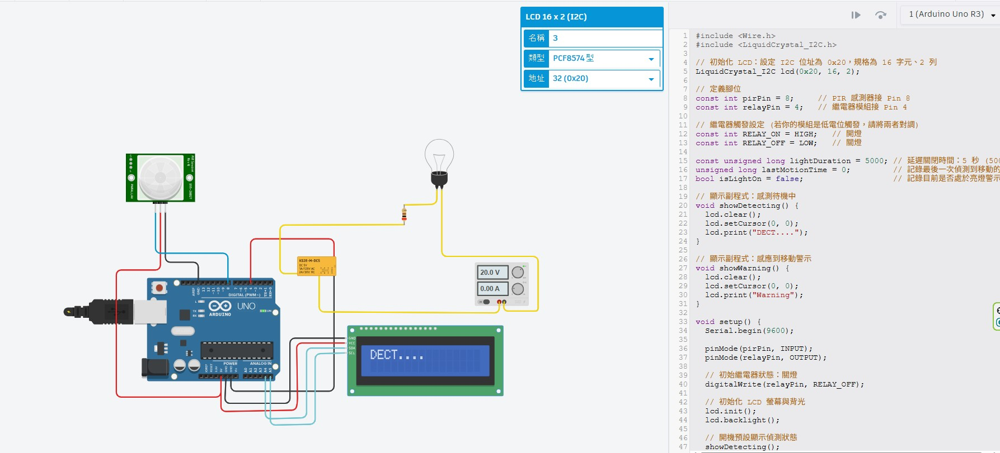

PIR 感測器接 Pin 8 • 繼電器接 Pin 4 • I2C LCD (PCF8574 位址 0x20) • 移動觸發開燈並延遲 5 秒自動關閉

| 模組名稱 | 模組引腳 | Arduino Uno 引腳 | 導線顏色與說明 |
|---|---|---|---|
| Parallax PIR 感測器 | VCC (+) | 5V | 紅色導線，接至 5V 匯流排 |
| GND (-) | GND | 黑色導線，接至 GND 匯流排 | |
| SIG (輸出) | 數位 Pin 8 | 藍色導線，偵測到人體移動時輸出 HIGH | |
| 電磁繼電器 (KS2E-M-DC5) | Coil (+) 控制端 | 數位 Pin 4 | 黃色導線，輸出 HIGH 時驅動線圈吸合 |
| Coil (-) 接地端 | GND | 黑色導線，接至 GND | |
| I2C LCD 1602 (PCF8574) | GND | GND | 黑色接地線 |
| VCC | 5V | 紅色電源線 | |
| SDA (資料線) | 類比 A4 | 淺藍色線，I2C 雙向資料傳輸 | |
| SCL (時脈線) | 類比 A5 | 淺藍色線，I2C 同步時脈線 | |
| 受控電燈回路 | COM (公共端) | 外接 20V 電源正極 (+) | 黃色導線接至電源供應器 |
| NO (常開端) | 限流電阻 ➔ 燈泡正極 | 平時斷開，繼電器觸發時導通點亮燈泡 |
類型: PCF8574 型，地址: 32 (0x20)。0x20，因此在宣告 LCD 物件時必須填寫 LiquidCrystal_I2C lcd(0x20, 16, 2);。
本程式直接承接截圖中已輸入的部分，並將 loop() 邏輯完整補齊，採用非阻塞式 millis() 架構，當人持續在場時會不斷刷新 5 秒倒數，人離開 5 秒後自動熄燈並將 LCD 切回待機：
#include <Wire.h>
#include <LiquidCrystal_I2C.h>
// 初始化 LCD: 設定 I2C 位址為 0x20，規格為 16 字元、2 列
LiquidCrystal_I2C lcd(0x20, 16, 2);
// 定義腳位
const int pirPin = 8; // PIR 感測器接 Pin 8
const int relayPin = 4; // 繼電器模組接 Pin 4
// 繼電器觸發設定 (若你的模組是低電位觸發，請將兩者對調)
const int RELAY_ON = HIGH; // 開燈
const int RELAY_OFF = LOW; // 關燈
const unsigned long lightDuration = 5000; // 延遲關閉時間: 5 秒 (5000ms)
unsigned long lastMotionTime = 0; // 記錄最後一次偵測到移動的時間
bool isLightOn = false; // 記錄目前是否處於亮燈警示狀態
// 顯示副程式: 感測待機中
void showDetecting() {
lcd.clear();
lcd.setCursor(0, 0);
lcd.print("DECT....");
}
// 顯示副程式: 感應到移動警示
void showWarning() {
lcd.clear();
lcd.setCursor(0, 0);
lcd.print("Warning");
}
void setup() {
Serial.begin(9600);
pinMode(pirPin, INPUT);
pinMode(relayPin, OUTPUT);
// 初始繼電器狀態: 關燈
digitalWrite(relayPin, RELAY_OFF);
// 初始化 LCD 螢幕與背光
lcd.init();
lcd.backlight();
// 開機預設顯示偵測狀態
showDetecting();
Serial.println(F("[系統就緒] PIR Pin 8 + Relay Pin 4 啟動，進入偵測待機..."));
}
void loop() {
// 1. 讀取 PIR 感測器數位輸出狀態
int pirState = digitalRead(pirPin);
// 2. 當偵測到人體移動 (PIR 輸出 HIGH)
if (pirState == HIGH) {
// 更新最後一次偵測到移動的時間戳記
lastMotionTime = millis();
// 如果目前燈尚未開啟，則觸發開燈與切換警示
if (!isLightOn) {
isLightOn = true;
digitalWrite(relayPin, RELAY_ON); // 繼電器動作，開燈
showWarning(); // LCD 顯示 "Warning"
Serial.println(F("[偵測到移動] 繼電器導通開燈！LCD 顯示 Warning"));
}
}
// 3. 若燈目前是開啟的，檢查是否已超過 5 秒無人走動
if (isLightOn) {
if (millis() - lastMotionTime >= lightDuration) {
// 5 秒已到且中途無新移動觸發，關閉電燈
isLightOn = false;
digitalWrite(relayPin, RELAY_OFF); // 繼電器復歸，關燈
showDetecting(); // LCD 恢復顯示 "DECT...."
Serial.println(F("[延遲時間 5 秒已到] 無人移動，自動關燈並恢復待機。"));
}
}
// 微幅延遲，保持 loop 運作穩定
delay(20);
}
點選下方按鈕模擬 PIR 偵測到人體走動，觀察繼電器、電燈、LCD 螢幕與 5 秒倒數計時器的動作反饋：